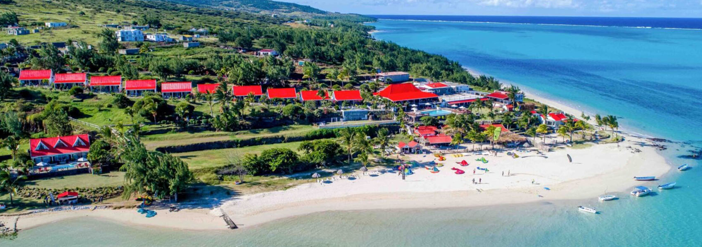

Mourouk Beach
Mourouk beach is well known for its magnificent features and for kitesurfing.

Ile aux Chat
discover a small island which helps every visitors escape from reality with its wonderful features.

Saint Gabriel Church
The largest church in Rodrigues, attracting tourists for its rich history.

Île aux Cocos
A small island reserve with turquoise waters and seabirds.